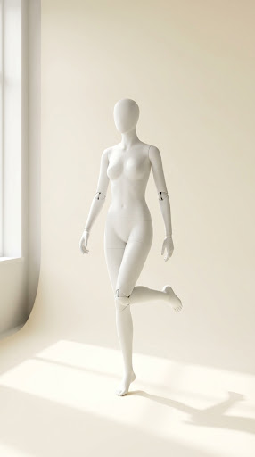
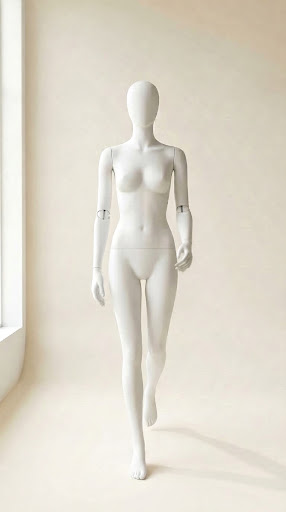
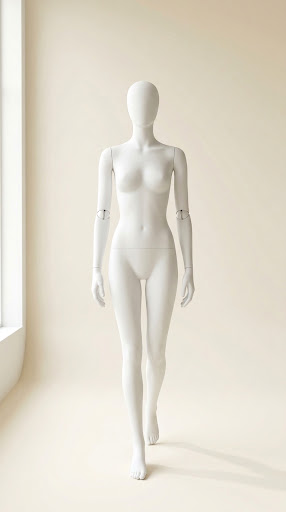
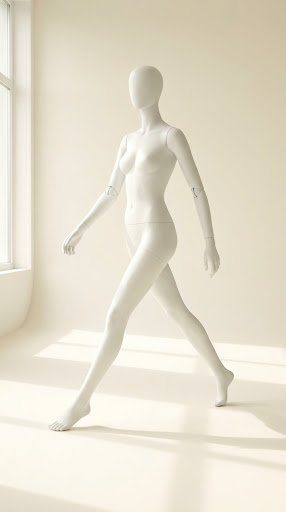
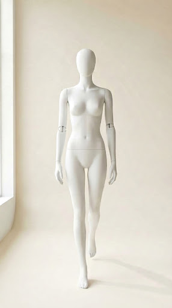
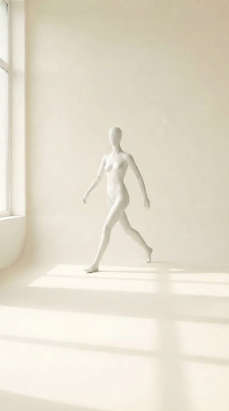
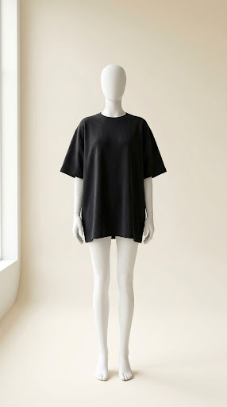

27 · Full-bleed vertical editorial fashion photograph only, no interface elements, no text. Clean warm ivory seamless cyclorama background, window daylight from left, soft floor shadow. Fixed chest-height camera, straight-on frontal perspective. Matte white articulated female mannequin walking forward toward camera, frame 6 of walking sequence, occupying roughly 90% of frame height, very close, stride shortening. Consistent lighting and style matching reference images.

59 · Full-bleed vertical editorial fashion photograph, clean studio shot, no UI, no text. Warm ivory seamless cyclorama background, diffused daylight, window light from left, soft floor shadow. Straight-on camera, chest-height, headroom above head. Matte white articulated female mannequin with visible elbow joints, head to bare feet. Frozen mid-walk in exaggerated stride: right leg vertical supporting weight, left knee bent high with left foot clearly lifted off floor behind, dynamic walking motion.46 · Full-bleed vertical editorial fashion photograph, clean studio shot, no UI, no text. Warm ivory seamless cyclorama background, soft diffused daylight from left window, soft floor shadow. Matte white articulated female mannequin with visible elbow joint seams, full body head to bare feet with headroom, straight-on camera. Mannequin is FROZEN MID-WALK in an exaggerated dynamic stride: left leg planted vertical supporting body, right knee bent and lifted with right foot raised clearly off the floor behind, arms countering stride motion. Pristine minimalist studio aesthetic.40 · Full-bleed vertical editorial fashion photograph, clean studio shot, no UI, no text. Warm ivory seamless cyclorama background, soft diffused daylight from left window, soft floor shadow. Matte white articulated female mannequin with visible elbow joints, full body head to bare feet, centered, straight-on camera. Mannequin is positioned far back in studio, taking up roughly 50% frame height with large expanse of empty ivory floor in foreground. Frozen mid-walk in dynamic exaggerated stride toward camera, opposite arm and leg swinging forward, distinct mid-stride walking motion. Minimalist high-fashion studio aesthetic.43 · Full-bleed vertical editorial fashion photograph, no interface elements, no text, no graphic overlay, pristine clean high fashion studio photograph. A matte white minimalist articulated female mannequin stands perfectly centered in the frame, full body completely visible from head to feet. Warm ivory seamless studio cyclorama background with soft diffused daylight and a gentle soft floor shadow beneath the mannequin feet. Fixed camera at chest height, straight-on frontal perspective, perfectly symmetrical, generous consistent headroom of approximately eight percent of the frame above the head. The mannequin is completely bare, wearing nothing, pure matte white finish, subtle joints, clean minimalist silhouette. Award-winning studio lighting, editorial fashion lookbook aesthetic.

38 · Full-bleed vertical editorial fashion photograph, no UI or text. Clean warm ivory cyclorama background, window daylight from left, soft floor shadow. Fixed chest-height camera, straight-on frontal perspective. Matte white articulated female mannequin walking forward toward camera, frame 5 of walking sequence, occupying roughly 80% of frame height, mid-stride stepping closer. Consistent lighting and style matching reference images.

25 · Full-bleed vertical editorial fashion photograph, no UI, no text, clean studio shot. Warm ivory seamless cyclorama background with soft diffused daylight, soft floor shadow, window light from left. Fixed chest-height camera, straight on. Frame 1 of walking sequence toward camera: matte white articulated female mannequin walking toward the camera, far away, occupying roughly 40 percent of frame height, captured mid-stride. Symmetrical backdrop, matching lighting and aesthetic of reference.20 · Full-bleed vertical editorial fashion photograph, no UI, no text, clean studio shot. Warm ivory seamless cyclorama background, soft diffused daylight from left window, soft floor shadow. Matte white articulated female mannequin with visible elbow joints, full body head to bare feet with headroom, straight-on view. Frozen mid-walk in an exaggerated dynamic stride: left leg lunged far forward with heel strike, right leg trailing far behind with heel up, wide separation between feet. Right arm swung forward, left arm back. Bare mannequin matching reference aesthetic.

47 · Full-bleed vertical editorial fashion photograph, no UI, no text. Clean warm ivory cyclorama, diffused daylight from left window, soft floor shadow. Matte white articulated female mannequin head to bare feet, straight-on frontal view. Frozen mid-walk in an exaggerated dynamic stride: right leg lunged far forward with heel strike, left leg trailing far behind with heel up, wide separation between feet. Left arm swung forward, right arm back. Visible elbow seams.69 · Full-bleed vertical editorial fashion photograph, pristine clean studio shot, no interface elements, no text, no graphic overlay. A matte white articulated female mannequin centered full-body head to feet against warm ivory seamless cyclorama background. Identical lighting, camera angle at chest height, straight-on frontal perspective, and 8% headroom matching reference images. The mannequin wears the oversized boxy black heavyweight cotton t-shirt with dropped shoulders from reference, paired with added charcoal tapered heavyweight jogger pants. Pristine minimalist studio aesthetic.

11 · Full-bleed vertical studio fashion photograph, clean, no UI or text. Matte white articulated female mannequin walking forward toward camera, frame 7 of walking sequence. Occupies ~95% of frame height, very close head to feet, taking final small step with feet almost together. Warm ivory seamless cyclorama background, window daylight from left, soft floor shadow. Fixed chest-height camera, straight-on frontal view matching reference images.34 · Full-bleed vertical studio fashion photograph, clean, no UI, no text. Warm ivory cyclorama, window daylight from left, soft floor shadow. Matte white articulated female mannequin head to bare feet, straight-on view with headroom. Frozen mid-stride walking: left leg planted vertical, right knee bent with right foot lifted clearly off the floor behind, dynamic walking pose.

41 · Full-bleed vertical studio fashion photograph, no UI, no text. Clean warm ivory cyclorama background, window daylight from left, soft floor shadow. Centered straight-on shot. Matte white articulated female mannequin with visible elbow seams, bare feet, head to toe visible. Frozen mid-walk in exaggerated stride. Mannequin positioned far away at the back of the studio, occupying roughly half the frame height, centered, with large expanse of empty ivory floor in foreground.6 · Full-bleed vertical studio fashion photograph, no UI, no text. Clean warm ivory cyclorama, diffused daylight, window light from left, floor shadow. Matte white articulated female mannequin, head to bare feet, straight-on frontal view. Frozen mid-walk in an exaggerated dynamic stride: right leg lunged far forward with heel strike, left leg trailing far behind with heel up and toes pressed, wide separation between feet. Left arm swung forward, right arm swung back. Visible elbow seams. Minimalist studio aesthetic matching references.66 · Full-bleed vertical studio fashion photograph, no UI, no text. Clean warm ivory seamless cyclorama, window daylight from left, soft floor shadow. Fixed chest-height camera, straight-on frontal perspective. Matte white articulated female mannequin walking forward toward camera, frame 3 of walking sequence, occupying roughly 60% of frame height, captured mid-stride stepping closer. Consistent lighting, framing, and minimalist studio aesthetic.

63 · Full-bleed vertical studio fashion photograph, pristine clean with no UI or text. Exactly matching reference image style, framing, and matte white articulated female mannequin centered full-body from head to feet against a warm ivory seamless cyclorama background. Same lighting, camera angle, and 8% headroom. The mannequin wears ONLY an oversized boxy black heavyweight cotton t-shirt with dropped shoulders. Nothing else.54 · Full-bleed vertical studio fashion photograph, pristine clean with no UI or text. Exactly matching reference image style, framing, and matte white articulated female mannequin centered full-body head to feet against warm ivory seamless cyclorama background. Identical lighting, camera angle at chest height, straight-on frontal perspective, and 8% headroom matching reference images. The mannequin wears the oversized boxy black heavyweight cotton t-shirt and charcoal tapered joggers from reference, layered with an unzipped open ecru heavyweight French-terry hoodie over the tee. Minimalist studio lookbook aesthetic.4 · Full-bleed vertical studio fashion photograph, pristine clean, no UI or text overlay. Exactly matching reference image style, framing, and matte white articulated female mannequin centered full-body head to feet against warm ivory seamless cyclorama background. Identical soft diffused lighting, chest-height camera angle, straight-on frontal perspective, and 8% headroom matching reference images. The mannequin wears the complete styled outfit: oversized black tee, charcoal tapered joggers, and an ecru heavyweight French-terry hoodie fully zipped closed with the hood pulled up over the mannequin's head. Minimalist studio lookbook aesthetic.35 · Full-bleed vertical studio fashion photograph, pristine clean, no UI or text. Warm ivory seamless cyclorama, window daylight from left, soft floor shadow. Fixed chest-height camera, straight-on frontal view. Matte white articulated female mannequin centered full-body head to feet, standing still with feet together, arms relaxed at sides, matching frame 8 final stop pose. Exact aesthetic and lighting of reference images.22 · Vertical editorial fashion photo, clean studio cyclorama, ivory background, soft window light from left, soft floor shadow. Matte white articulated female mannequin with visible elbow joints, full body head to bare feet with headroom, straight-on view. Frozen mid-walk in dynamic stride: right leg vertical supporting weight, left knee bent with left foot lifted off floor behind. No UI, no text.48 · Vertical editorial fashion photo, clean studio shot, no UI, no text. Warm ivory seamless cyclorama, soft daylight from left window, soft floor shadow. Straight-on camera, headroom above head. Matte white articulated female mannequin head to bare feet. Frozen mid-walk in exaggerated stride: left leg lunged forward with heel strike, right leg trailing far behind with heel lifted, wide separation between feet. Right arm swung forward, left arm back. Visible elbow seams. Minimalist aesthetic.57 · Vertical studio editorial fashion photograph, no UI, no text. Clean warm ivory cyclorama background, window daylight from left, soft floor shadow. Fixed chest-height camera, straight-on frontal perspective. Matte white articulated female mannequin walking forward, frame 2 of walking sequence, occupying roughly 50% of frame height, opposite leg mid-stride stepping closer.7 · Vertical studio fashion photograph, no UI or text. Clean warm ivory seamless cyclorama background, window daylight from left, soft floor shadow. Fixed chest-height camera, straight-on frontal perspective. Matte white articulated female mannequin walking forward toward camera, frame 4 of walking sequence, occupying roughly 70% of frame height, opposite leg mid-stride stepping closer. Consistent lighting and style matching reference images.
![Full-bleed vertical editorial fashion photograph, clean studio shot, no UI, no text. Warm ivory seamless cyclorama background, soft diffused daylight from left window, soft floor shadow. Matte white articulated female mannequin with visible elbow joint seams, full body head to bare feet with headroom, straight-on camera. Mannequin is FROZEN MID-WALK in an exaggerated dynamic stride: left leg planted vertical supporting body, right knee bent and lifted with right foot raised clearly off the floor behind, arms countering stride motion. Pristine minimalist studio aesthetic.](project-4978034307012465281/046-full-bleed-vertical-editorial-fashion-photograph-clean-studio-shot-no--ebad52cbdc614aab88af98b0b3f94540.png)
![Full-bleed vertical editorial fashion photograph, clean studio shot, no UI, no text. Warm ivory seamless cyclorama background, soft diffused daylight from left window, soft floor shadow. Matte white articulated female mannequin with visible elbow joints, full body head to bare feet, centered, straight-on camera. Mannequin is positioned far back in studio, taking up roughly 50% frame height with large expanse of empty ivory floor in foreground. Frozen mid-walk in dynamic exaggerated stride toward camera, opposite arm and leg swinging forward, distinct mid-stride walking motion. Minimalist high-fashion studio aesthetic.](project-4978034307012465281/040-full-bleed-vertical-editorial-fashion-photograph-clean-studio-shot-no--aa6df74bb86c482a874539120167eb62.png)
![Full-bleed vertical editorial fashion photograph, no interface elements, no text, no graphic overlay, pristine clean high fashion studio photograph. A matte white minimalist articulated female mannequin stands perfectly centered in the frame, full body completely visible from head to feet. Warm ivory seamless studio cyclorama background with soft diffused daylight and a gentle soft floor shadow beneath the mannequin feet. Fixed camera at chest height, straight-on frontal perspective, perfectly symmetrical, generous consistent headroom of approximately eight percent of the frame above the head. The mannequin is completely bare, wearing nothing, pure matte white finish, subtle joints, clean minimalist silhouette. Award-winning studio lighting, editorial fashion lookbook aesthetic.](project-4978034307012465281/043-full-bleed-vertical-editorial-fashion-photograph-no-interface-elements-5a2d2b3cf66343a29df8581a2bc81656.png)
![Full-bleed vertical editorial fashion photograph, no UI, no text, clean studio shot. Warm ivory seamless cyclorama background, soft diffused daylight from left window, soft floor shadow. Matte white articulated female mannequin with visible elbow joints, full body head to bare feet with headroom, straight-on view. Frozen mid-walk in an exaggerated dynamic stride: left leg lunged far forward with heel strike, right leg trailing far behind with heel up, wide separation between feet. Right arm swung forward, left arm back. Bare mannequin matching reference aesthetic.](project-4978034307012465281/020-full-bleed-vertical-editorial-fashion-photograph-no-ui-no-text-clean-s-48f75978b15449ecb57b6c448dc867c2.png)
![Full-bleed vertical editorial fashion photograph, pristine clean studio shot, no interface elements, no text, no graphic overlay. A matte white articulated female mannequin centered full-body head to feet against warm ivory seamless cyclorama background. Identical lighting, camera angle at chest height, straight-on frontal perspective, and 8% headroom matching reference images. The mannequin wears the oversized boxy black heavyweight cotton t-shirt with dropped shoulders from reference, paired with added charcoal tapered heavyweight jogger pants. Pristine minimalist studio aesthetic.](project-4978034307012465281/069-full-bleed-vertical-editorial-fashion-photograph-pristine-clean-studio-551fd86fa52b4946b58052718d724616.png)
![Full-bleed vertical studio fashion photograph, no UI, no text. Clean warm ivory cyclorama, diffused daylight, window light from left, floor shadow. Matte white articulated female mannequin, head to bare feet, straight-on frontal view. Frozen mid-walk in an exaggerated dynamic stride: right leg lunged far forward with heel strike, left leg trailing far behind with heel up and toes pressed, wide separation between feet. Left arm swung forward, right arm swung back. Visible elbow seams. Minimalist studio aesthetic matching references.](project-4978034307012465281/006-full-bleed-vertical-studio-fashion-photograph-no-ui-no-text-clean-warm-d8e5ebbe12e24cc4b5f6617fda2ab495.png)
![Full-bleed vertical studio fashion photograph, pristine clean with no UI or text. Exactly matching reference image style, framing, and matte white articulated female mannequin centered full-body head to feet against warm ivory seamless cyclorama background. Identical lighting, camera angle at chest height, straight-on frontal perspective, and 8% headroom matching reference images. The mannequin wears the oversized boxy black heavyweight cotton t-shirt and charcoal tapered joggers from reference, layered with an unzipped open ecru heavyweight French-terry hoodie over the tee. Minimalist studio lookbook aesthetic.](project-4978034307012465281/054-full-bleed-vertical-studio-fashion-photograph-pristine-clean-with-no-u-d5dd9d4782d84e07968d500609d69b5c.png)
![Full-bleed vertical studio fashion photograph, pristine clean, no UI or text overlay. Exactly matching reference image style, framing, and matte white articulated female mannequin centered full-body head to feet against warm ivory seamless cyclorama background. Identical soft diffused lighting, chest-height camera angle, straight-on frontal perspective, and 8% headroom matching reference images. The mannequin wears the complete styled outfit: oversized black tee, charcoal tapered joggers, and an ecru heavyweight French-terry hoodie fully zipped closed with the hood pulled up over the mannequin's head. Minimalist studio lookbook aesthetic.](project-4978034307012465281/004-full-bleed-vertical-studio-fashion-photograph-pristine-clean-no-ui-or--f2da0bf6806348998c3a6658ffe20215.png)